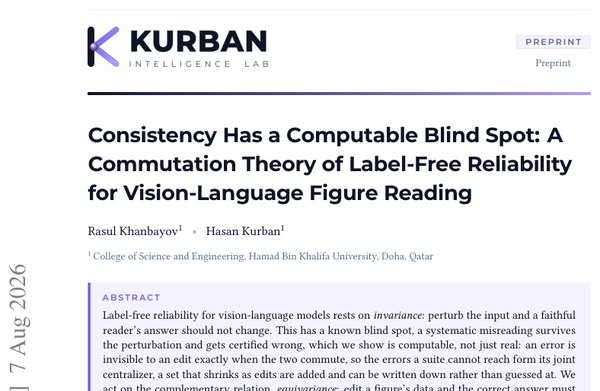

Consistency Has a Computable Blind Spot: A Commutation Theory of Label-Free Reliability for Vision–Language Figure Reading

In one sentence. Shows that the blind spot of invariance-based reliability checks for figure-reading vision-language models is computable, and introduces the Equivariance-Consistency Score, a label-free detector built on edits that should change the answer by a known amount.
Abstract
Label-free reliability for vision-language models rests on invariance: perturb the input and a faithful reader's answer should not change. This has a known blind spot, a systematic misreading survives the perturbation and gets certified wrong, which we show is computable, not just real: an error is invisible to an edit exactly when the two commute, so the errors a suite cannot reach form its joint centralizer, a set that shrinks as edits are added and can be written down rather than guessed at. We act on the complementary relation, equivariance: edit a figure's data and the correct answer must change by a computable amount. Two matched edits are provably complete for affine reading errors; no suite of swap edits is complete for label permutations, and cyclic relabeling closes most of that gap. We instantiate the theory as the Equivariance-Consistency Score, a label-free, training-free detector, and release REND-EQUIV, pairing matched invariance and equivariance sets over identical data. The predicted ordering holds across three models and a hand-labeled population immune to the one circularity in how it is selected; a second invariance-family method confirms the blind spot belongs to the relation, not to any implementation; and cyclic relabeling delivers its predicted gain on a matched real sample. The same characterization explains a reported inversion of this ordering in the classifier metamorphic-testing literature: detectability is a joint property of the relation and the fault class, never of the relation alone.
BibTeX
@inproceedings{khanbayov2027consistency,
title = {Consistency Has a Computable Blind Spot: A Commutation Theory of Label-Free Reliability for Vision–Language Figure Reading},
author = {Khanbayov, Rasul and Kurban, Hasan},
booktitle = {Findings of the Association for Computational Linguistics: EACL 2027},
year = {2027}
}